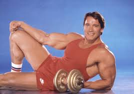
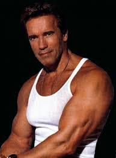
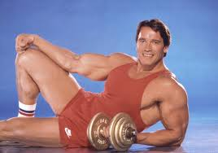
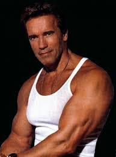

Arnold Schwarzenegger
Arnold Alois Schwarzenegger (/ˈʃvɑːrtsnɛɡər/;[1][a] German: [ˈaʁnɔlt ˈʃvaʁtsn̩ˌʔɛɡɐ]; born July 30, 1947) is an Austrian-American actor, businessman, retired professional bodybuilder[2] and former politician who served as the 38th Governor of California from 2003 to 2011. As of 2020, he is the most recent Republican governor of California. Schwarzenegger began lifting weights at the age of 15, and went on to win the Mr. Universe title at age 20 before winning the Mr. Olympia contest seven times; he remains a prominent presence in bodybuilding and has written many books and articles on the sport. The Arnold Sports Festival, considered the second most important bodybuilding event after Mr. Olympia,[3] is named after him. He is widely regarded as one of the greatest bodybuilders of all time, as well as the sport's most charismatic and famous ambassador.[4] Schwarzenegger gained worldwide fame as a Hollywood action film icon. His breakthrough film was the sword-and-sorcery epic Conan the Barbarian (1982), a box-office hit that resulted in a sequel in 1984.[5] He appeared as the title character in James Cameron's critically and commercially successful science fiction film The Terminator (1984), and subsequently played similar characters in the sequel films Terminator 2: Judgment Day (1991), Terminator 3: Rise of the Machines (2003), Terminator Genisys (2015) and Terminator: Dark Fate (2019). He also starred in other successful action films such as Commando (1985), The Running Man (1987), Predator (1987), Total Recall (1990) and True Lies (1994), in addition to comedy films such as Twins (1988), Kindergarten Cop (1990), Junior (1994) and Jingle All the Way (1996). As a Republican candidate, Schwarzenegger was first elected on October 7, 2003, in a special recall election to replace then-Governor Gray Davis. He was sworn in on November 17, to serve the remainder of Davis' term. He was then re-elected in the 2006 California gubernatorial election, to serve a full term as governor.[6] In 2011, he completed his second term as Governor and returned to acting. Schwarzenegger was nicknamed the "Austrian Oak" in his bodybuilding days, "Arnie" or "Schwarzy" during his acting career, and "The Governator" (a portmanteau of "Governor" and "Terminator") during his political career. He married Maria Shriver, the niece of 35th U.S. President John F. Kennedy, in 1986. They separated in 2011 after he admitted to having fathered an illegitimate child with their housemaid in 1997,[7] and their divorce was finalized in 2017. The name of his production company is Oak Productions.[8]
 


